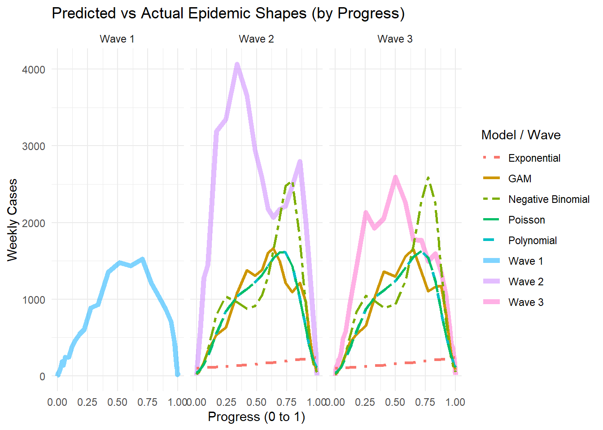

Show Code for loading R packages
pacman::p_load(tidyverse, plotly, MASS, mgcv, Metrics, gt)Jia Peng Chua | Zanelle Lee Wenfang
April 3, 2025
First, we load the appropriate R packages that are necessary for the exploration of the dataset, as well as for its analysis and time series usage. In this segment, we will be loading tidyverse, MASS, mgcv, and Metrics.
The dataset is loaded into dengue_daily, and summary() is used to get a rough idea on the dataset and its variables.
發病日 個案研判日 通報日
Min. :1998-01-02 Min. :2004-05-16 Min. :1998-01-07
1st Qu.:2014-10-29 1st Qu.:2014-11-28 1st Qu.:2014-10-31
Median :2015-09-29 Median :2015-10-10 Median :2015-10-01
Mean :2016-04-13 Mean :2017-02-27 Mean :2016-04-16
3rd Qu.:2023-07-10 3rd Qu.:2023-08-18 3rd Qu.:2023-07-13
Max. :2025-03-16 Max. :2025-03-16 Max. :2025-03-16
NA's :6279
性別 年齡層 居住縣市 居住鄉鎮
Length:107312 Length:107312 Length:107312 Length:107312
Class :character Class :character Class :character Class :character
Mode :character Mode :character Mode :character Mode :character
居住村里 最小統計區 最小統計區中心點X 最小統計區中心點Y
Length:107312 Length:107312 Min. :118.3 Min. :21.93
Class :character Class :character 1st Qu.:120.2 1st Qu.:22.63
Mode :character Mode :character Median :120.3 Median :22.96
Mean :120.3 Mean :22.91
3rd Qu.:120.3 3rd Qu.:23.00
Max. :122.0 Max. :26.16
NA's :789 NA's :789
一級統計區 二級統計區 感染縣市 感染鄉鎮
Length:107312 Length:107312 Length:107312 Length:107312
Class :character Class :character Class :character Class :character
Mode :character Mode :character Mode :character Mode :character
感染村里 是否境外移入 感染國家 確定病例數
Length:107312 Length:107312 Length:107312 Min. :1
Class :character Class :character Class :character 1st Qu.:1
Mode :character Mode :character Mode :character Median :1
Mean :1
3rd Qu.:1
Max. :2
居住村里代碼 感染村里代碼 血清型 內政部居住縣市代碼
Length:107312 Length:107312 Length:107312 Min. : 63.0
Class :character Class :character Class :character 1st Qu.: 64.0
Mode :character Mode :character Mode :character Median : 67.0
Mean : 546.3
3rd Qu.: 67.0
Max. :10020.0
NA's :476
內政部居住鄉鎮代碼 內政部感染縣市代碼 內政部感染鄉鎮代碼
Min. : 900701 Min. : 63 Min. :1000202
1st Qu.:6400700 1st Qu.: 64 1st Qu.:6400700
Median :6401800 Median : 66 Median :6401600
Mean :6281126 Mean : 359 Mean :6384118
3rd Qu.:6703300 3rd Qu.: 67 3rd Qu.:6703300
Max. :6801200 Max. :10020 Max. :6801000
NA's :476 NA's :19108 NA's :19108 As this is a Taiwan dataset, it is not surprising that most of the data is recorded in Mandarin. For easier referencing and usage of the dataset, the column names are translated to English.
colnames(dengue_daily) <- c("Onset_Date", "Case_Classification_Date", "Reporting_Date", "Gender",
"Age_Group", "Residential_County_City", "Residential_Town_District",
"Residential_Village", "Smallest_Statistical_Area", "X_coord",
"Y_coord", "Primary_Statistical_Area", "Secondary_Statistical_Area",
"Infection_County_City", "Infection_Town_District", "Infection_Village",
"Imported_Case", "Infection_Country", "Confirmed_Cases",
"Residential_Village_Code", "Infection_Village_Code", "Serotype",
"MOI_Residential_County_Code", "MOI_Residential_Town_Code",
"MOI_Infection_County_Code", "MOI_Infection_Town_Code")Looking through the variables, we realized that Confirmed_Cases have 2 rows that consist of count “2” instead of “1” like all the other rows. Thus, we duplicate these rows to the number of count (i.e. 2) and change the count to “1”. The code will work for rows with number of count more than 2 as well. This column will then not be necessary for future steps.
The relevant columns are then selected, and these include Onset_Date, Gender, Age_Group, Residential_County_City, Residential_Town_District, X_coord, Y_coord, Imported_Case, Serotype, MOI_Residential_County_Code, MOI_Residential_Town_Code.
The data was also further scrutinized. The following amendments were made to make the dataset easier to reference and work with:
dengue_daily <- dengue_daily %>%
mutate(Residential_County_City = recode(Residential_County_City,
"屏東縣" = "Pingtung County",
"宜蘭縣" = "Yilan County",
"高雄市" = "Kaohsiung City",
"桃園市" = "Taoyuan City",
"新北市" = "New Taipei City",
"台北市" = "Taipei City",
"台南市" = "Tainan City",
"新竹縣" = "Hsinchu County",
"南投縣" = "Nantou County",
"台中市" = "Taichung City",
"新竹市" = "Hsinchu City",
"雲林縣" = "Yunlin County",
"彰化縣" = "Changhua County",
"花蓮縣" = "Hualien County",
"台東縣" = "Taitung County",
"嘉義縣" = "Chiayi County",
"嘉義市" = "Chiayi City",
"基隆市" = "Keelung City",
"苗栗縣" = "Miaoli County",
"澎湖縣" = "Penghu County",
"連江縣" = "Lianjiang County",
"金門縣" = "Kinmen County"),
Onset_Epiweek = epiweek(Onset_Date),
Gender = recode(Gender, "U" = "M"),
Imported_Case = recode(Imported_Case, "是" = "Yes",
"否" = "No"),
Serotype = recode(Serotype, "第一型" = "Type 1",
"第二型" = "Type 2",
"第三型" = "Type 3",
"第四型" = "Type 4"),
MOI_Residential_County_Code =
str_pad(MOI_Residential_County_Code, width = 5,
side = "right", pad = "0"),
Age_Group = ifelse(Age_Group %in% c("0", "1", "2", "3", "4"), "0-4", Age_Group),
Age_Group = factor(Age_Group, levels = c("0-4", "5-9",
sort(unique(Age_Group[
Age_Group != "0-4" & Age_Group != "5-9"]
)))))weekly_cases <- dengue_daily %>%
mutate(week = floor_date(Onset_Date, "week")) %>%
group_by(week) %>%
summarise(cases = n())
wave1_start <- as.Date("2014-05-11")
wave1_end <- as.Date("2015-01-25")
wave2_start <- as.Date("2015-05-24")
wave2_end <- as.Date("2016-02-14")
wave3_start <- as.Date("2023-05-07")
wave3_end <- as.Date("2024-02-04")
dengue_daily <- dengue_daily %>%
mutate(Wave = case_when(
Onset_Date >= wave1_start & Onset_Date <= wave1_end ~ "Wave 1",
Onset_Date >= wave2_start & Onset_Date <= wave2_end ~ "Wave 2",
Onset_Date >= wave3_start & Onset_Date <= wave3_end ~ "Wave 3",
TRUE ~ NA_character_
))
wave1 <- weekly_cases %>%
filter(week >= wave1_start & week <= wave1_end)
wave2 <- weekly_cases %>%
filter(week >= wave2_start & week <= wave2_end)
wave3 <- weekly_cases %>%
filter(week >= wave3_start & week <= wave3_end)
wave1 <- wave1 %>% mutate(month_day = format(week, "%m-%d"), Outbreak_Year ="2014", aligned_date = if_else(month(week) <= 3,
as.Date(paste0("2024-", month_day)),
as.Date(paste0("2023-", month_day)))
)
wave2 <- wave2 %>% mutate(month_day = format(week, "%m-%d"), Outbreak_Year ="2015", aligned_date = if_else(month(week) <= 3,
as.Date(paste0("2024-", month_day)),
as.Date(paste0("2023-", month_day)))
)
wave3 <- wave3 %>% mutate(month_day = format(week, "%m-%d"), Outbreak_Year ="2023", aligned_date = if_else(month(week) <= 3,
as.Date(paste0("2024-", month_day)),
as.Date(paste0("2023-", month_day)))
)
all_waves <- bind_rows(wave1, wave2, wave3)Before starting on model comparison, we must first decide on the types of model we want to include in our comparison. Here is a quick summary of the curves that will be fitted.
table_data <- tibble(
Model = c("Poisson", "Negative Binomial", "Exponential", "GAM", "Polynomial", "Lognormal", "Gamma"),
`Best For` = c(
"Count data with equal mean/variance",
"Overdispersed count data",
"Early outbreak exponential growth",
"Complex trends and multi-peak waves",
"Epidemic waves (with right degree)",
"Cumulative or right-skewed data",
"Skewed continuous outcome (e.g., duration)"
),
Overdispersion = c("No", "Yes", "No", "Yes", "No", "Yes", "Yes"),
Flexibility = c("Low", "Moderate", "Low", "Very High", "High", "Moderate", "Moderate"),
Interpretability = c("High", "High", "High", "Moderate", "Low", "Low", "Low"),
`Overfitting Risk` = c("Low", "Medium", "Low", "High", "High", "Medium", "Medium"),
Remarks = c(
"Fails with overdispersion",
"Good for noisy data",
"Fits only early phase",
"Flexible, needs tuning",
"Prone to overfit with high degree",
"Good for wave shapes",
"Good for cumulative modeling"
)
)
color_overdispersion <- function(x) ifelse(x == "Yes", "lightgreen", "tomato")
color_flexibility <- function(x) case_when(
x == "Low" ~ "#f4cccc",
x == "Moderate" ~ "#fce5cd",
x == "High" ~ "#d9ead3",
x == "Very High" ~ "#b6d7a8",
TRUE ~ NA_character_
)
color_interpretability <- function(x) case_when(
x == "Low" ~ "#f4cccc",
x == "Moderate" ~ "#fff2cc",
x == "High" ~ "#b6d7a8",
TRUE ~ NA_character_
)
color_overfitting <- function(x) case_when(
x == "Low" ~ "#b6d7a8",
x == "Medium" ~ "#ffe599",
x == "High" ~ "#f4cccc",
TRUE ~ NA_character_
)
table_data %>%
gt() %>%
tab_header(title = "Comparison of Curve Fitting Models") %>%
data_color(columns = c(Overdispersion), fn = color_overdispersion) %>%
data_color(columns = c(Flexibility), fn = color_flexibility) %>%
data_color(columns = c(Interpretability), fn = color_interpretability) %>%
data_color(columns = c(`Overfitting Risk`), fn = color_overfitting)| Comparison of Curve Fitting Models | ||||||
|---|---|---|---|---|---|---|
| Model | Best For | Overdispersion | Flexibility | Interpretability | Overfitting Risk | Remarks |
| Poisson | Count data with equal mean/variance | No | Low | High | Low | Fails with overdispersion |
| Negative Binomial | Overdispersed count data | Yes | Moderate | High | Medium | Good for noisy data |
| Exponential | Early outbreak exponential growth | No | Low | High | Low | Fits only early phase |
| GAM | Complex trends and multi-peak waves | Yes | Very High | Moderate | High | Flexible, needs tuning |
| Polynomial | Epidemic waves (with right degree) | No | High | Low | High | Prone to overfit with high degree |
| Lognormal | Cumulative or right-skewed data | Yes | Moderate | Low | Medium | Good for wave shapes |
| Gamma | Skewed continuous outcome (e.g., duration) | Yes | Moderate | Low | Medium | Good for cumulative modeling |
# Poisson model
poisson_model1 <- glm(cases ~ week_index, family = "poisson", data = wave1)
# Negative Binomial model
nb_model1 <- glm.nb(cases ~ week_index, data = wave1)
# Exponential model (linear model on log scale)
exp_model1 <- glm(log(cases + 1) ~ week_index, family = gaussian(), data = wave1)
# Fit the GAM model
gam_model1 <- gam(cases ~ s(week_index), family = poisson(), data = wave1)
# Fit 2nd-degree polynomial Poisson regression
poly_model1 <- glm(cases ~ poly(week_index, 2), family = poisson(), data = wave1)
# Log-Normal (fit on log-transformed cases + 1 to avoid log(0))
lognormal_model1 <- glm(log(cases + 1) ~ week_index, family = gaussian(), data = wave1)
# Gamma
gamma_model1 <- glm(cases ~ week_index, family = Gamma(link = "log"), data = wave1)# Preparation
wave1 <- wave1 %>%
mutate(
fitted_poisson1 = predict(poisson_model1, type = "response"),
fitted_nb1 = predict(nb_model1, type = "response"),
fitted_exp1 = exp(predict(exp_model1)),
fitted_gam1 = predict(gam_model1, type = "response"),
fitted_poly1 = predict(poly_model1, type = "response"),
fitted_lognormal1 = exp(predict(lognormal_model1)),
fitted_gamma1 = predict(gamma_model1, type = "response")
)
# Plot
ggplot(wave1, aes(x = week_index)) +
geom_point(aes(y = cases), color = "black", alpha = 0.6, size = 2) +
geom_line(aes(y = fitted_poisson1, color = "Poisson"), size = 1) +
geom_line(aes(y = fitted_nb1, color = "Negative Binomial"), size = 1, linetype = "dashed") +
geom_line(aes(y = fitted_exp1, color = "Exponential"), size = 1, linetype = "dotdash") +
geom_line(aes(y = fitted_gam1, color = "GAM"), size = 1, linetype = "twodash") +
geom_line(aes(y = fitted_poly1, color = "Polynomial"), size = 1, linetype = "longdash") +
geom_line(aes(y = fitted_lognormal1, color = "Log-Normal"), size = 1, linetype = "solid") +
geom_line(aes(y = fitted_gamma1, color = "Gamma"), size = 1, linetype = "dotted")NULLTo ensure a better fit for the Polynomial Model, we run the model through different degrees of freedom and get the AIC of each plot, before choosing the best degree that will give us reasonably good AIC results without excessively increasing the degree of freedom.
degrees1 <- 1:10
aic_values1 <- numeric(length(degrees1))
models1 <- list()
for (i in degrees1) {
model1 <- glm(cases ~ poly(week_index, i), family = poisson(), data = wave1)
models1[[i]] <- model1
aic_values1[i] <- AIC(model1)
}
aic_df1 <- data.frame(
Degree1 = degrees1,
AIC1 = aic_values1
)
print(aic_df1) Degree1 AIC1
1 1 18323.2559
2 2 2259.2223
3 3 750.8355
4 4 617.9736
5 5 511.6079
6 6 458.4039
7 7 460.3838
8 8 461.8459
9 9 442.1706
10 10 442.1970The degree of freedom is then changed before plotting the Polynomial Model again. We should now see that it is a better fit to the dataset.
# Changing to fit 3rd-degree polynomial Poisson regression
poly_model1 <- glm(cases ~ poly(week_index, 6), family = poisson(), data = wave1)
wave1 <- wave1 %>%
mutate(
fitted_poly1 = predict(poly_model1, type = "response")
)
# Re-plotting the graph
ggplot(wave1, aes(x = week_index)) +
geom_point(aes(y = cases), color = "black", alpha = 0.6, size = 2) +
geom_line(aes(y = fitted_poisson1, color = "Poisson"), size = 1) +
geom_line(aes(y = fitted_nb1, color = "Negative Binomial"), size = 1, linetype = "dashed") +
geom_line(aes(y = fitted_exp1, color = "Exponential"), size = 1, linetype = "dotdash") +
geom_line(aes(y = fitted_gam1, color = "GAM"), size = 1, linetype = "twodash") +
geom_line(aes(y = fitted_poly1, color = "Polynomial"), size = 1, linetype = "longdash") +
geom_line(aes(y = fitted_lognormal1, color = "Log-Normal"), size = 1, linetype = "solid") +
geom_line(aes(y = fitted_gamma1, color = "Gamma"), size = 1, linetype = "dotted") +
labs(
title = "Model Comparison on 2014 Outbreak",
subtitle = "Black = Actual, Lines = Model Fits",
x = "Week Index", y = "Number of Cases",
color = "Model"
) +
theme_minimal()We then compare the AIC values of all the models.
df AIC
poisson_model1 2.000000 18323.2559
nb_model1 3.000000 517.2099
exp_model1 3.000000 150.6526
poly_model1 7.000000 458.4039
gam_model1 9.740789 439.9684
lognormal_model1 3.000000 150.6526
gamma_model1 3.000000 517.6125We also look at the residuals for the different models to check on the fitting of the different models.
# Obtaining residuals
wave1 <- wave1 %>% mutate(
resid_poisson = residuals(poisson_model1, type = "response"),
resid_nb = residuals(nb_model1, type = "response"),
resid_exp = residuals(exp_model1, type = "response"),
resid_poly = residuals(poly_model1, type = "response"),
resid_gam = residuals(gam_model1, type = "response"),
resid_lognormal = residuals(lognormal_model1, type = "response"),
resid_gamma = residuals(gamma_model1, type = "response"))
# Converting to long format
resid_long1 <- wave1 %>%
dplyr::select(week_index, resid_poisson, resid_nb, resid_exp, resid_poly, resid_gam, resid_lognormal, resid_gamma) %>%
pivot_longer(
cols = starts_with("resid_"),
names_to = "model",
values_to = "residual") %>%
mutate(model = recode(model,
resid_poisson = "Poisson",
resid_nb = "Negative Binomial",
resid_exp = "Exponential",
resid_poly = "Polynomial",
resid_gam = "GAM",
resid_lognormal = "Lognormal",
resid_gamma = "Gamma"))
resid_long1$model <- fct_relevel(resid_long1$model,
"Poisson", "Negative Binomial", "Exponential", "Polynomial", "GAM", "Lognormal", "Gamma")
# Plotting residuals
ggplot(resid_long1, aes(x = week_index, y = residual, color = model)) + geom_hline(yintercept = 0, linetype = "dashed", color = "gray50") + geom_line(size = 0.7) + facet_wrap(~ model, scales = "free_y") +
labs(
title = "Residuals for All Models",
x = "Week Index",
y = "Residuals") +
theme_minimal() The Root Mean Squared Error (RMSE) is also calculated to know the variation of the fitted curves from the actual data.
rmse_summary1 <- wave1 %>%
summarise(
Poisson = sqrt(mean(resid_poisson^2)),
`Negative Binomial` = sqrt(mean(resid_nb^2)),
Exponential = sqrt(mean(resid_exp^2)),
Polynomial = sqrt(mean(resid_poly^2)),
GAM = sqrt(mean(resid_gam^2)),
Lognormal = sqrt(mean(resid_lognormal^2)),
Gamma = sqrt(mean(resid_gamma^2))) %>%
pivot_longer(everything(), names_to = "Model", values_to = "RMSE")
ggplot(rmse_summary1, aes(x = reorder(Model, RMSE), y = RMSE, fill = Model)) +
geom_col(width = 0.6, show.legend = FALSE) +
geom_text(aes(label = round(RMSE, 2)), vjust = -0.5, size = 4) +
labs(
title = "RMSE Comparison Across Models",
subtitle = "Lower RMSE indicates better fit",
x = "Model", y = "RMSE") +
theme_minimal()Cumulative Model Comparisons are also done for the same 7 models.
# Preparation
wave1 <- wave1 %>%
mutate(
cumulative_cases = cumsum(cases),
cumulative_poisson = cumsum(fitted_poisson1),
cumulative_nb = cumsum(fitted_nb1),
cumulative_exp = cumsum(fitted_exp1),
cumulative_gam = cumsum(fitted_gam1),
cumulative_poly = cumsum(fitted_poly1),
cumulative_lognormal = cumsum(fitted_lognormal1),
cumulative_gamma = cumsum(fitted_gamma1)
)
# Plot
ggplot(wave1, aes(x = week_index)) +
geom_point(aes(y = cumulative_cases), color = "black", alpha = 0.6, size = 2) +
geom_line(aes(y = cumulative_poisson, color = "Poisson"), size = 1) +
geom_line(aes(y = cumulative_nb, color = "Negative Binomial"), size = 1, linetype = "dashed") +
geom_line(aes(y = cumulative_exp, color = "Exponential"), size = 1, linetype = "dotdash") +
geom_line(aes(y = cumulative_gam, color = "GAM"), size = 1, linetype = "twodash") +
geom_line(aes(y = cumulative_poly, color = "Polynomial"), size = 1, linetype = "longdash") +
geom_line(aes(y = cumulative_lognormal, color = "Log-Normal"), size = 1, linetype = "solid") +
geom_line(aes(y = cumulative_gamma, color = "Gamma"), size = 1, linetype = "dotted") +
labs(
title = "Cumulative Cases vs Model Fits",
subtitle = "Black dots = Actual || Lines = Fitted Cumulative Cases",
x = "Week Index",
y = "Cumulative Number of Cases",
color = "Model"
) +
theme_minimal()Residuals of these models are also plotted.
# Prepatation
wave1 <- wave1 %>%
mutate(
resid_cum_poisson = cumulative_cases - cumulative_poisson,
resid_cum_nb = cumulative_cases - cumulative_nb,
resid_cum_exp = cumulative_cases - cumulative_exp,
resid_cum_poly = cumulative_cases - cumulative_poly,
resid_cum_gam = cumulative_cases - cumulative_gam,
resid_cum_lognormal = cumulative_cases - cumulative_lognormal,
resid_cum_gamma = cumulative_cases - cumulative_gamma
)
# Converting to long format
resid_cum_long1 <- wave1 %>%
dplyr::select(week_index, resid_cum_poisson, resid_cum_nb, resid_cum_exp, resid_cum_poly, resid_cum_gam, resid_cum_lognormal, resid_cum_gamma) %>%
pivot_longer(cols = starts_with("resid_cum"),
names_to = "model",
values_to = "cumulative_residual") %>%
mutate(model = recode(model,
resid_cum_poisson = "Poisson",
resid_cum_nb = "Negative Binomial",
resid_cum_exp = "Exponential",
resid_cum_poly = "Polynomial",
resid_cum_gam = "GAM",
resid_cum_lognormal = "Lognormal",
resid_cum_gamma = "Gamma"))
# Plot
ggplot(resid_cum_long1, aes(x = week_index, y = cumulative_residual, color = model)) +
geom_line(size = 1) +
facet_wrap(~ model, scales = "free_y") +
labs(
title = "Cumulative Residuals by Model",
x = "Week Index",
y = "Cumulative Residual (Actual - Fitted)"
) +
theme_minimal()RMSE for these cumulative models are also calculated to compare them against actual values.
# Preparation
rmse_cum_poisson1 <- sqrt(mean(wave1$resid_cum_poisson^2))
rmse_cum_nb1 <- sqrt(mean(wave1$resid_cum_nb^2))
rmse_cum_exp1 <- sqrt(mean(wave1$resid_cum_exp^2))
rmse_cum_gam1 <- sqrt(mean(wave1$resid_cum_gam^2))
rmse_cum_poly1 <- sqrt(mean(wave1$resid_cum_poly^2))
rmse_cum_lognormal1 <- sqrt(mean(wave1$resid_cum_lognormal^2))
rmse_cum_gamma1 <- sqrt(mean(wave1$resid_cum_gamma^2))
# Put in a table
rmse_table1 <- tibble(
Model = c("Poisson", "Negative Binomial", "Exponential", "GAM", "Polynomial", "Lognormal", "Gamma"),
RMSE = c(rmse_cum_poisson1, rmse_cum_nb1, rmse_cum_exp1, rmse_cum_gam1, rmse_cum_poly1, rmse_cum_lognormal1, rmse_cum_gamma1)
)
# Plot
ggplot(rmse_table1, aes(x = reorder(Model, RMSE), y = RMSE, fill = Model)) +
geom_col(width = 0.6, show.legend = FALSE) +
geom_text(aes(label = round(RMSE, 1)), vjust = -0.5, size = 4) +
labs(
title = "RMSE of Cumulative Cases by Model",
subtitle = "Lower RMSE indicates better fit",
x = "Model",
y = "RMSE"
) +
theme_minimal()The same are also done for Outbreak Year 2015 and 2023.
poisson_model2 <- glm(cases ~ week_index, family = "poisson", data = wave2)
nb_model2 <- glm.nb(cases ~ week_index, data = wave2)
exp_model2 <- glm(log(cases + 1) ~ week_index, family = gaussian(), data = wave2)
gam_model2 <- gam(cases ~ s(week_index), family = poisson(), data = wave2)
poly_model2 <- glm(cases ~ poly(week_index, 12), family = poisson(), data = wave2)
lognormal_model2 <- glm(log(cases + 1) ~ week_index, family = gaussian(), data = wave2)
gamma_model2 <- glm(cases ~ week_index, family = Gamma(link = "log"), data = wave2)# Preparation
wave2 <- wave2 %>%
mutate(
fitted_poisson2 = predict(poisson_model2, type = "response"),
fitted_nb2 = predict(nb_model2, type = "response"),
fitted_exp2 = exp(predict(exp_model2)),
fitted_gam2 = predict(gam_model2, type = "response"),
fitted_poly2 = predict(poly_model2, type = "response"),
fitted_lognormal2 = exp(predict(lognormal_model2)),
fitted_gamma2 = predict(gamma_model2, type = "response")
)
# Plot
ggplot(wave2, aes(x = week_index)) +
geom_point(aes(y = cases), color = "black", alpha = 0.6, size = 2) +
geom_line(aes(y = fitted_poisson2, color = "Poisson"), size = 1) +
geom_line(aes(y = fitted_nb2, color = "Negative Binomial"), size = 1, linetype = "dashed") +
geom_line(aes(y = fitted_exp2, color = "Exponential"), size = 1, linetype = "dotdash") +
geom_line(aes(y = fitted_gam2, color = "GAM"), size = 1, linetype = "twodash") +
geom_line(aes(y = fitted_poly2, color = "Polynomial"), size = 1, linetype = "longdash") +
geom_line(aes(y = fitted_lognormal2, color = "Log-Normal"), size = 1, linetype = "solid") +
geom_line(aes(y = fitted_gamma2, color = "Gamma"), size = 1, linetype = "dotted") +
labs(
title = "Model Comparison on 2015 Outbreak",
subtitle = "Black = Actual, Lines = Model Fits",
x = "Week Index", y = "Number of Cases",
color = "Model"
) +
theme_minimal() df AIC
poisson_model2 2.000000 58699.5229
nb_model2 3.000000 609.6094
exp_model2 3.000000 174.9942
poly_model2 13.000000 666.8310
gam_model2 9.926241 642.3945
lognormal_model2 3.000000 174.9942
gamma_model2 3.000000 611.1210# Obtaining residuals
wave2 <- wave2 %>% mutate(
resid_poisson = residuals(poisson_model2, type = "response"),
resid_nb = residuals(nb_model2, type = "response"),
resid_exp = residuals(exp_model2, type = "response"),
resid_poly = residuals(poly_model2, type = "response"),
resid_gam = residuals(gam_model2, type = "response"),
resid_lognormal = residuals(lognormal_model2, type = "response"),
resid_gamma = residuals(gamma_model2, type = "response"))
# Converting to long format
resid_long2 <- wave2 %>%
dplyr::select(week_index, resid_poisson, resid_nb, resid_exp, resid_poly, resid_gam, resid_lognormal, resid_gamma) %>%
pivot_longer(
cols = starts_with("resid_"),
names_to = "model",
values_to = "residual") %>%
mutate(model = recode(model,
resid_poisson = "Poisson",
resid_nb = "Negative Binomial",
resid_exp = "Exponential",
resid_poly = "Polynomial",
resid_gam = "GAM",
resid_lognormal = "Lognormal",
resid_gamma = "Gamma"))
resid_long2$model <- fct_relevel(resid_long2$model,
"Poisson", "Negative Binomial", "Exponential", "Polynomial", "GAM", "Lognormal", "Gamma")
# Plotting residuals
ggplot(resid_long2, aes(x = week_index, y = residual, color = model)) + geom_hline(yintercept = 0, linetype = "dashed", color = "gray50") + geom_line(size = 0.7) + facet_wrap(~ model, scales = "free_y") +
labs(
title = "Residuals for All Models",
x = "Week Index",
y = "Residuals") +
theme_minimal() rmse_summary2 <- wave2 %>%
summarise(
Poisson = sqrt(mean(resid_poisson^2)),
`Negative Binomial` = sqrt(mean(resid_nb^2)),
Exponential = sqrt(mean(resid_exp^2)),
Polynomial = sqrt(mean(resid_poly^2)),
GAM = sqrt(mean(resid_gam^2)),
Lognormal = sqrt(mean(resid_lognormal^2)),
Gamma = sqrt(mean(resid_gamma^2))) %>%
pivot_longer(everything(), names_to = "Model", values_to = "RMSE")
ggplot(rmse_summary2, aes(x = reorder(Model, RMSE), y = RMSE, fill = Model)) +
geom_col(width = 0.6, show.legend = FALSE) +
geom_text(aes(label = round(RMSE, 2)), vjust = -0.5, size = 4) +
labs(
title = "RMSE Comparison Across Models",
subtitle = "Lower RMSE indicates better fit",
x = "Model", y = "RMSE") +
theme_minimal()# Preparation
wave2 <- wave2 %>%
mutate(
cumulative_cases = cumsum(cases),
cumulative_poisson = cumsum(fitted_poisson2),
cumulative_nb = cumsum(fitted_nb2),
cumulative_exp = cumsum(fitted_exp2),
cumulative_gam = cumsum(fitted_gam2),
cumulative_poly = cumsum(fitted_poly2),
cumulative_lognormal = cumsum(fitted_lognormal2),
cumulative_gamma = cumsum(fitted_gamma2)
)
# Plot
ggplot(wave2, aes(x = week_index)) +
geom_point(aes(y = cumulative_cases), color = "black", alpha = 0.6, size = 2) +
geom_line(aes(y = cumulative_poisson, color = "Poisson"), size = 1) +
geom_line(aes(y = cumulative_nb, color = "Negative Binomial"), size = 1, linetype = "dashed") +
geom_line(aes(y = cumulative_exp, color = "Exponential"), size = 1, linetype = "dotdash") +
geom_line(aes(y = cumulative_gam, color = "GAM"), size = 1, linetype = "twodash") +
geom_line(aes(y = cumulative_poly, color = "Polynomial"), size = 1, linetype = "longdash") +
geom_line(aes(y = cumulative_lognormal, color = "Lognormal"), size = 1, linetype = "solid") +
geom_line(aes(y = cumulative_gamma, color = "Gamma"), size = 1, linetype = "dotted") +
labs(
title = "Cumulative Cases vs Model Fits",
subtitle = "Black dots = Actual || Lines = Fitted Cumulative Cases",
x = "Week Index",
y = "Cumulative Number of Cases",
color = "Model"
) +
theme_minimal()# Prepatation
wave2 <- wave2 %>%
mutate(
resid_cum_poisson = cumulative_cases - cumulative_poisson,
resid_cum_nb = cumulative_cases - cumulative_nb,
resid_cum_exp = cumulative_cases - cumulative_exp,
resid_cum_poly = cumulative_cases - cumulative_poly,
resid_cum_gam = cumulative_cases - cumulative_gam,
resid_cum_lognormal = cumulative_cases - cumulative_lognormal,
resid_cum_gamma = cumulative_cases - cumulative_gamma
)
# Converting to long format
resid_cum_long2 <- wave2 %>%
dplyr::select(week_index, resid_cum_poisson, resid_cum_nb, resid_cum_exp, resid_cum_poly, resid_cum_gam, resid_cum_lognormal, resid_cum_gamma) %>%
pivot_longer(cols = starts_with("resid_cum"),
names_to = "model",
values_to = "cumulative_residual") %>%
mutate(model = recode(model,
resid_cum_poisson = "Poisson",
resid_cum_nb = "Negative Binomial",
resid_cum_exp = "Exponential",
resid_cum_poly = "Polynomial",
resid_cum_gam = "GAM",
resid_cum_lognormal = "Lognormal",
resid_cum_gamma = "Gamma"))
# Plot
ggplot(resid_cum_long2, aes(x = week_index, y = cumulative_residual, color = model)) +
geom_line(size = 1) +
facet_wrap(~ model, scales = "free_y") +
labs(
title = "Cumulative Residuals by Model",
x = "Week Index",
y = "Cumulative Residual (Actual - Fitted)"
) +
theme_minimal()# Preparation
rmse_cum_poisson2 <- sqrt(mean(wave2$resid_cum_poisson^2))
rmse_cum_nb2 <- sqrt(mean(wave2$resid_cum_nb^2))
rmse_cum_exp2 <- sqrt(mean(wave2$resid_cum_exp^2))
rmse_cum_gam2 <- sqrt(mean(wave2$resid_cum_gam^2))
rmse_cum_poly2 <- sqrt(mean(wave2$resid_cum_poly^2))
rmse_cum_lognormal2 <- sqrt(mean(wave2$resid_cum_lognormal^2))
rmse_cum_gamma2 <- sqrt(mean(wave2$resid_cum_gamma^2))
# Put in a table
rmse_table2 <- tibble(
Model = c("Poisson", "Negative Binomial", "Exponential", "GAM", "Polynomial", "Lognormal", "Gamma"),
RMSE = c(rmse_cum_poisson2, rmse_cum_nb2, rmse_cum_exp2, rmse_cum_gam2, rmse_cum_poly2, rmse_cum_lognormal2, rmse_cum_gamma2)
)
# Plot
ggplot(rmse_table2, aes(x = reorder(Model, RMSE), y = RMSE, fill = Model)) +
geom_col(width = 0.6, show.legend = FALSE) +
geom_text(aes(label = round(RMSE, 1)), vjust = -0.5, size = 4) +
labs(
title = "RMSE of Cumulative Cases by Model",
subtitle = "Lower RMSE indicates better fit",
x = "Model",
y = "RMSE"
) +
theme_minimal()poisson_model3 <- glm(cases ~ week_index, family = "poisson", data = wave3)
nb_model3 <- glm.nb(cases ~ week_index, data = wave3)
exp_model3 <- glm(log(cases + 1) ~ week_index, family = gaussian(), data = wave3)
gam_model3 <- gam(cases ~ s(week_index), family = poisson(), data = wave3)
poly_model3 <- glm(cases ~ poly(week_index, 9), family = poisson(), data = wave3)
lognormal_model3 <- glm(log(cases + 1) ~ week_index, family = gaussian(), data = wave3)
gamma_model3 <- glm(cases ~ week_index, family = Gamma(link = "log"), data = wave3)# Preparation
wave3 <- wave3 %>%
mutate(
fitted_poisson3 = predict(poisson_model3, type = "response"),
fitted_nb3 = predict(nb_model3, type = "response"),
fitted_exp3 = exp(predict(exp_model3)),
fitted_gam3 = predict(gam_model3, type = "response"),
fitted_poly3 = predict(poly_model3, type = "response"),
fitted_lognormal3 = exp(predict(lognormal_model2)),
fitted_gamma3 = predict(gamma_model2, type = "response"))
# Plot
ggplot(wave3, aes(x = week_index)) +
geom_point(aes(y = cases), color = "black", alpha = 0.6, size = 2) +
geom_line(aes(y = fitted_poisson3, color = "Poisson"), size = 1) +
geom_line(aes(y = fitted_nb3, color = "Negative Binomial"), size = 1, linetype = "dashed") +
geom_line(aes(y = fitted_exp3, color = "Exponential"), size = 1, linetype = "dotdash") +
geom_line(aes(y = fitted_gam3, color = "GAM"), size = 1, linetype = "twodash") +
geom_line(aes(y = fitted_poly3, color = "Polynomial"), size = 1, linetype = "longdash") +
geom_line(aes(y = fitted_lognormal3, color = "Log-Normal"), size = 1, linetype = "solid") +
geom_line(aes(y = fitted_gamma3, color = "Gamma"), size = 1, linetype = "dotted") +
labs(
title = "Model Comparison on 2023 Outbreak",
subtitle = "Black = Actual, Lines = Model Fits",
x = "Week Index", y = "Number of Cases",
color = "Model"
) +
theme_minimal() df AIC
poisson_model3 2.000000 35694.9045
nb_model3 3.000000 576.5524
exp_model3 3.000000 169.7138
poly_model3 10.000000 648.7884
gam_model3 9.913975 582.5120
lognormal_model3 3.000000 169.7138
gamma_model3 3.000000 577.6858# Obtaining residuals
wave3 <- wave3 %>% mutate(
resid_poisson = residuals(poisson_model3, type = "response"),
resid_nb = residuals(nb_model3, type = "response"),
resid_exp = residuals(exp_model3, type = "response"),
resid_poly = residuals(poly_model3, type = "response"),
resid_gam = residuals(gam_model3, type = "response"),
resid_lognormal = residuals(lognormal_model3, type = "response"),
resid_gamma = residuals(gamma_model3, type = "response"))
# Converting to long format
resid_long3 <- wave3 %>%
dplyr::select(week_index, resid_poisson, resid_nb, resid_exp, resid_poly, resid_gam, resid_lognormal, resid_gamma) %>%
pivot_longer(
cols = starts_with("resid_"),
names_to = "model",
values_to = "residual") %>%
mutate(model = recode(model,
resid_poisson = "Poisson",
resid_nb = "Negative Binomial",
resid_exp = "Exponential",
resid_poly = "Polynomial",
resid_gam = "GAM",
resid_lognormal = "Lognormal",
resid_gamma = "Gamma"))
resid_long3$model <- fct_relevel(resid_long3$model,
"Poisson", "Negative Binomial", "Exponential", "Polynomial", "GAM", "Lognormal", "Gamma")
# Plotting residuals
ggplot(resid_long3, aes(x = week_index, y = residual, color = model)) + geom_hline(yintercept = 0, linetype = "dashed", color = "gray50") + geom_line(size = 0.7) + facet_wrap(~ model, scales = "free_y") +
labs(
title = "Residuals for All Models",
x = "Week Index",
y = "Residuals") +
theme_minimal() rmse_summary3 <- wave3 %>%
summarise(
Poisson = sqrt(mean(resid_poisson^2)),
`Negative Binomial` = sqrt(mean(resid_nb^2)),
Exponential = sqrt(mean(resid_exp^2)),
Polynomial = sqrt(mean(resid_poly^2)),
GAM = sqrt(mean(resid_gam^2)),
Lognormal = sqrt(mean(resid_lognormal^2)),
Gamma = sqrt(mean(resid_gamma^2))) %>%
pivot_longer(everything(), names_to = "Model", values_to = "RMSE")
ggplot(rmse_summary3, aes(x = reorder(Model, RMSE), y = RMSE, fill = Model)) +
geom_col(width = 0.6, show.legend = FALSE) +
geom_text(aes(label = round(RMSE, 2)), vjust = -0.5, size = 4) +
labs(
title = "RMSE Comparison Across Models",
subtitle = "Lower RMSE indicates better fit",
x = "Model", y = "RMSE") +
theme_minimal()# Preparation
wave3 <- wave3 %>%
mutate(
cumulative_cases = cumsum(cases),
cumulative_poisson = cumsum(fitted_poisson3),
cumulative_nb = cumsum(fitted_nb3),
cumulative_exp = cumsum(fitted_exp3),
cumulative_gam = cumsum(fitted_gam3),
cumulative_poly = cumsum(fitted_poly3),
cumulative_lognormal = cumsum(fitted_lognormal3),
cumulative_gamma = cumsum(fitted_gamma3)
)
# Plot
ggplot(wave3, aes(x = week_index)) +
geom_point(aes(y = cumulative_cases), color = "black", alpha = 0.6, size = 2) +
geom_line(aes(y = cumulative_poisson, color = "Poisson"), size = 1) +
geom_line(aes(y = cumulative_nb, color = "Negative Binomial"), size = 1, linetype = "dashed") +
geom_line(aes(y = cumulative_exp, color = "Exponential"), size = 1, linetype = "dotdash") +
geom_line(aes(y = cumulative_gam, color = "GAM"), size = 1, linetype = "twodash") +
geom_line(aes(y = cumulative_poly, color = "Polynomial"), size = 1, linetype = "longdash") +
geom_line(aes(y = cumulative_lognormal, color = "Lognormal"), size = 1, linetype = "solid") +
geom_line(aes(y = cumulative_gamma, color = "Gamma"), size = 1, linetype = "dotted") +
labs(
title = "Cumulative Cases vs Model Fits",
subtitle = "Black dots = Actual || Lines = Fitted Cumulative Cases",
x = "Week Index",
y = "Cumulative Number of Cases",
color = "Model"
) +
theme_minimal()# Prepatation
wave3 <- wave3 %>%
mutate(
resid_cum_poisson = cumulative_cases - cumulative_poisson,
resid_cum_nb = cumulative_cases - cumulative_nb,
resid_cum_exp = cumulative_cases - cumulative_exp,
resid_cum_poly = cumulative_cases - cumulative_poly,
resid_cum_gam = cumulative_cases - cumulative_gam,
resid_cum_lognormal = cumulative_cases - cumulative_lognormal,
resid_cum_gamma = cumulative_cases - cumulative_gamma
)
# Converting to long format
resid_cum_long3 <- wave3 %>%
dplyr::select(week_index, resid_cum_poisson, resid_cum_nb, resid_cum_exp, resid_cum_poly, resid_cum_gam, resid_cum_lognormal, resid_cum_gamma) %>%
pivot_longer(cols = starts_with("resid_cum"),
names_to = "model",
values_to = "cumulative_residual") %>%
mutate(model = recode(model,
resid_cum_poisson = "Poisson",
resid_cum_nb = "Negative Binomial",
resid_cum_exp = "Exponential",
resid_cum_poly = "Polynomial",
resid_cum_gam = "GAM",
resid_cum_lognormal = "Lognormal",
resid_cum_gamma = "Gamma"))
# Plot
ggplot(resid_cum_long3, aes(x = week_index, y = cumulative_residual, color = model)) +
geom_line(size = 1) +
facet_wrap(~ model, scales = "free_y") +
labs(
title = "Cumulative Residuals by Model",
x = "Week Index",
y = "Cumulative Residual (Actual - Fitted)"
) +
theme_minimal()# Preparation
rmse_cum_poisson3 <- sqrt(mean(wave3$resid_cum_poisson^2))
rmse_cum_nb3 <- sqrt(mean(wave3$resid_cum_nb^2))
rmse_cum_exp3 <- sqrt(mean(wave3$resid_cum_exp^2))
rmse_cum_gam3 <- sqrt(mean(wave3$resid_cum_gam^2))
rmse_cum_poly3 <- sqrt(mean(wave3$resid_cum_poly^2))
rmse_cum_lognormal3 <- sqrt(mean(wave3$resid_cum_lognormal^2))
rmse_cum_gamma3 <- sqrt(mean(wave3$resid_cum_gamma^2))
# Put in a table
rmse_table3 <- tibble(
Model = c("Poisson", "Negative Binomial", "Exponential", "GAM", "Polynomial", "Lognormal", "Gamma"),
RMSE = c(rmse_cum_poisson3, rmse_cum_nb3, rmse_cum_exp3, rmse_cum_gam3, rmse_cum_poly3, rmse_cum_lognormal3, rmse_cum_gamma3)
)
# Plot
ggplot(rmse_table3, aes(x = reorder(Model, RMSE), y = RMSE, fill = Model)) +
geom_col(width = 0.6, show.legend = FALSE) +
geom_text(aes(label = round(RMSE, 1)), vjust = -0.5, size = 4) +
labs(
title = "RMSE of Cumulative Cases by Model",
subtitle = "Lower RMSE indicates better fit",
x = "Model",
y = "RMSE"
) +
theme_minimal()To see how well a model trained with 1 outbreak period would perform on the other outbreak period, we load progress with the proportion of cases instead of a fixed count. This will allow us to better compare the graph shape of the outbreak period with another outbreak period.
The models being compared in this segment will include GAM Model, Polynomial Model, Exponential Model, Negative Binomial Model and Poisson Model.
# For Wave 1
wave1 <- wave1 %>%
arrange(week_index) %>%
mutate(
cum_cases = cumsum(cases),
progress = cum_cases / max(cum_cases)
)
# For Wave 2
wave2 <- wave2 %>%
arrange(week_index) %>%
mutate(
cum_cases = cumsum(cases),
progress = cum_cases / max(cum_cases)
)
# For Wave 3
wave3 <- wave3 %>%
arrange(week_index) %>%
mutate(
cum_cases = cumsum(cases),
progress = cum_cases / max(cum_cases)
)# GAM model
gam_progress1 <- gam(cases ~ s(progress), family = poisson(), data = wave1)
# Polynomial model
poly_progress1 <- glm(cases ~ poly(progress, 4), family = poisson(), data = wave1)
# Exponential model (fit on log scale)
exp_progress1 <- glm(log(cases + 1) ~ progress, family = gaussian(), data = wave1)
# Negative Binomial
nb_progress1 <- glm.nb(cases ~ poly(progress, 4), data = wave1)
# Poisson
poisson_progress1 <- glm(cases ~ poly(progress, 4), family = "poisson", data = wave1)We then attempt to predict the shape of Wave 2 and Wave 3 using the data from Wave 1.
# Predict using Wave 1 models on Wave 2
wave2 <- wave2 %>%
mutate(
pred_gam1 = predict(gam_progress1, newdata = wave2, type = "response"),
pred_poly1 = predict(poly_progress1, newdata = wave2, type = "response"),
pred_exp1 = exp(predict(exp_progress1, newdata = wave2)) - 1,
pred_nb1 = predict(nb_progress1, newdata = wave2, type = "response"),
pred_poisson1 = predict(poisson_progress1, newdata = wave2, type = "response")
)
# Predict using Wave 1 models on Wave 3
wave3 <- wave3 %>%
mutate(
pred_gam1 = predict(gam_progress1, newdata = wave3, type = "response"),
pred_poly1 = predict(poly_progress1, newdata = wave3, type = "response"),
pred_exp1 = exp(predict(exp_progress1, newdata = wave3)) - 1,
pred_nb1 = predict(nb_progress1, newdata = wave3, type = "response"),
pred_poisson1 = predict(poisson_progress1, newdata = wave3, type = "response")
)The predicted values are then plotted in the same plot as the actual values for visual comparison.
# Combine and label
wave1$wave <- "Wave 1"
wave2$wave <- "Wave 2"
wave3$wave <- "Wave 3"
predicted_progress1 <- bind_rows(wave1, wave2, wave3)
ggplot(predicted_progress1, aes(x = progress)) +
geom_line(aes(y = cases, color = wave), size = 2, alpha = 0.5) +
geom_line(aes(y = pred_gam1, color = "GAM"), linewidth = 1.2) +
geom_line(aes(y = pred_poly1, color = "Polynomial"), linewidth = 1.2, linetype = "dashed") +
geom_line(aes(y = pred_exp1, color = "Exponential"), linewidth = 1.2, linetype = "dotdash") +
geom_line(aes(y = pred_nb1, color = "Negative Binomial"), linewidth = 1, linetype = "twodash") +
geom_line(aes(y = pred_poisson1, color = "Poisson"), linewidth = 1, linetype = "longdash") +
facet_wrap(~wave, scales = "free_x") +
labs(
title = "Predicted vs Actual Epidemic Shapes (by Progress)",
x = "Progress (0 to 1)",
y = "Weekly Cases",
color = "Model / Wave"
) +
theme_minimal()
These steps are then repeated for the next two outbreak waves as well.
# GAM model
gam_progress2 <- gam(cases ~ s(progress), family = poisson(), data = wave2)
# Polynomial model
poly_progress2 <- glm(cases ~ poly(progress, 4), family = poisson(), data = wave2)
# Exponential model (fit on log scale)
exp_progress2 <- glm(log(cases + 1) ~ progress, family = gaussian(), data = wave2)
# Negative Binomial
nb_progress2 <- glm.nb(cases ~ poly(progress, 4), data = wave2)
# Poisson
poisson_progress2 <- glm(cases ~ poly(progress, 4), family = "poisson", data = wave2)# Predict on Wave 1
wave1 <- wave1 %>%
mutate(
pred_gam2 = predict(gam_progress2, newdata = wave1, type = "response"),
pred_poly2 = predict(poly_progress2, newdata = wave1, type = "response"),
pred_exp2 = exp(predict(exp_progress2, newdata = wave1)) - 1,
pred_nb2 = predict(nb_progress2, newdata = wave1, type = "response"),
pred_poisson2 = predict(poisson_progress2, newdata = wave1, type = "response"))
# Predict on Wave 3
wave3 <- wave3 %>%
mutate(
pred_gam2 = predict(gam_progress2, newdata = wave3, type = "response"),
pred_poly2 = predict(poly_progress2, newdata = wave3, type = "response"),
pred_exp2 = exp(predict(exp_progress2, newdata = wave3)) - 1,
pred_nb2 = predict(nb_progress2, newdata = wave3, type = "response"),
pred_poisson2 = predict(poisson_progress2, newdata = wave3, type = "response")
)# Combine for plotting
wave1$wave <- "Wave 1"
wave2$wave <- "Wave 2"
wave3$wave <- "Wave 3"
predicted_progress2 <- bind_rows(wave1, wave2, wave3)
ggplot(predicted_progress2, aes(x = progress)) +
geom_line(aes(y = cases, color = wave), alpha = 0.5, size = 2) +
geom_line(aes(y = pred_gam2, color = "GAM (from Wave 2)"), linewidth = 1) +
geom_line(aes(y = pred_poly2, color = "Polynomial (from Wave 2)"), linewidth = 1, linetype = "dashed") +
geom_line(aes(y = pred_exp2, color = "Exponential (from Wave 2)"), linewidth = 1, linetype = "dotdash") +
geom_line(aes(y = pred_nb2, color = "Negative Binomial (Wave 2)"), linewidth = 1, linetype = "twodash") +
geom_line(aes(y = pred_poisson2, color = "Poisson (Wave 2)"), linewidth = 1, linetype = "longdash") +
facet_wrap(~wave, scales = "free_x") +
labs(
title = "Predictions on Wave 1 & 3 using Models Trained on Wave 2",
x = "Progress (0–1)",
y = "Cases",
color = "Model / Wave"
) +
theme_minimal()# GAM
gam_progress3 <- gam(cases ~ s(progress), family = poisson(), data = wave3)
# Polynomial
poly_progress3 <- glm(cases ~ poly(progress, 4), family = poisson(), data = wave3)
# Exponential (log scale)
exp_progress3 <- glm(log(cases + 1) ~ progress, family = gaussian(), data = wave3)
# Negative Binomial
nb_progress3 <- glm.nb(cases ~ poly(progress, 4), data = wave3)
# Poisson
poisson_progress3 <- glm(cases ~ poly(progress, 4), family = "poisson", data = wave3)wave1 <- wave1 %>%
mutate(
pred_gam3 = predict(gam_progress3, newdata = wave1, type = "response"),
pred_poly3 = predict(poly_progress3, newdata = wave1, type = "response"),
pred_exp3 = exp(predict(exp_progress3, newdata = wave1)) - 1,
pred_nb3 = predict(nb_progress3, newdata = wave1, type = "response"),
pred_poisson3 = predict(poisson_progress3, newdata = wave1, type = "response")
)
wave2 <- wave2 %>%
mutate(
pred_gam3 = predict(gam_progress3, newdata = wave2, type = "response"),
pred_poly3 = predict(poly_progress3, newdata = wave2, type = "response"),
pred_exp3 = exp(predict(exp_progress3, newdata = wave2)) - 1,
pred_nb3 = predict(nb_progress3, newdata = wave2, type = "response"),
pred_poisson3 = predict(poisson_progress3, newdata = wave2, type = "response")
)wave1$wave <- "Wave 1"
wave2$wave <- "Wave 2"
wave3$wave <- "Wave 3"
predicted_progress3 <- bind_rows(wave1, wave2, wave3)
ggplot(predicted_progress3, aes(x = progress)) +
geom_line(aes(y = cases, color = wave), size = 2, alpha = 0.5) +
geom_line(aes(y = pred_gam3, color = "GAM (from Wave 3)"), linewidth = 1) +
geom_line(aes(y = pred_poly3, color = "Polynomial (from Wave 3)"), linewidth = 1, linetype = "dashed") +
geom_line(aes(y = pred_exp3, color = "Exponential (from Wave 3)"), linewidth = 1, linetype = "dotdash") +
geom_line(aes(y = pred_nb3, color = "Negative Binomial (Wave 3)"), linewidth = 1, linetype = "twodash") +
geom_line(aes(y = pred_poisson3, color = "Poisson (Wave 3)"), linewidth = 1, linetype = "longdash") +
facet_wrap(~wave, scales = "free_x") +
labs(
title = "Predictions on Wave 1 & 2 using Models Trained on Wave 3",
x = "Progress (0–1)",
y = "Cases",
color = "Model / Wave"
) +
theme_minimal()A function of RMSE is created to reduce the troublesome steps of obtaining the RMSE values.
We then compare the RMSE of the predicted values against the actual values when the models are trained using the different waves. For example, we look at Wave 2’s and Wave 3’s predicted values against Wave 1’s actual values and see which model is better at predicting these values.
The same is repeated for the other outbreak periods.
fit_metrics231 <- tibble(
Model = rep(c("GAM", "Polynomial", "Exponential", "Negative\nBinomial", "Poisson"), times = 2),
RMSE = c(
rmse(wave1$cases, wave1$pred_gam2),
rmse(wave1$cases, wave1$pred_poly2),
rmse(wave1$cases, wave1$pred_exp2),
rmse(wave1$cases, wave1$pred_nb2),
rmse(wave1$cases, wave1$pred_poisson2),
rmse(wave1$cases, wave1$pred_gam3),
rmse(wave1$cases, wave1$pred_poly3),
rmse(wave1$cases, wave1$pred_exp3),
rmse(wave1$cases, wave1$pred_nb3),
rmse(wave1$cases, wave1$pred_poisson3)
),
Wave = rep(c("Wave 2", "Wave 3"), each = 5)
)
# Plot side-by-side bars
ggplot(fit_metrics231, aes(x = Model, y = RMSE, fill = Wave)) +
geom_col(position = position_dodge(width = 0.9)) +
geom_text(aes(label = round(RMSE, 2)),
position = position_dodge(width = 0.8),
vjust = -0.3, size = 2.5) +
labs(
title = "RMSE of Models (Wave 2 vs Wave 3)",
x = "Model",
y = "RMSE"
) +
theme_minimal() +
scale_fill_brewer(palette = "Pastel1")fit_metrics132 <- tibble(
Model = rep(c("GAM", "Polynomial", "Exponential", "Negative\nBinomial", "Poisson"), times = 2),
RMSE = c(
rmse(wave2$cases, wave2$pred_gam1),
rmse(wave2$cases, wave2$pred_poly1),
rmse(wave2$cases, wave2$pred_exp1),
rmse(wave2$cases, wave2$pred_nb1),
rmse(wave2$cases, wave2$pred_poisson1),
rmse(wave2$cases, wave2$pred_gam3),
rmse(wave2$cases, wave2$pred_poly3),
rmse(wave2$cases, wave2$pred_exp3),
rmse(wave2$cases, wave2$pred_nb3),
rmse(wave2$cases, wave2$pred_poisson3)
),
Wave = rep(c("Wave 1", "Wave 3"), each = 5)
)
# Plot side-by-side bars
ggplot(fit_metrics132, aes(x = Model, y = RMSE, fill = Wave)) +
geom_col(position = position_dodge(width = 0.9)) +
geom_text(aes(label = round(RMSE, 2)),
position = position_dodge(width = 0.8),
vjust = -0.3, size = 2.5) +
labs(
title = "RMSE of Models (Wave 1 vs Wave 3)",
x = "Model",
y = "RMSE"
) +
theme_minimal() +
scale_fill_brewer(palette = "Pastel1")fit_metrics123 <- tibble(
Model = rep(c("GAM", "Polynomial", "Exponential", "Negative\nBinomial", "Poisson"), times = 2),
RMSE = c(
rmse(wave3$cases, wave3$pred_gam1),
rmse(wave3$cases, wave3$pred_poly1),
rmse(wave3$cases, wave3$pred_exp1),
rmse(wave3$cases, wave3$pred_nb1),
rmse(wave3$cases, wave3$pred_poisson1),
rmse(wave3$cases, wave3$pred_gam2),
rmse(wave3$cases, wave3$pred_poly2),
rmse(wave3$cases, wave3$pred_exp2),
rmse(wave3$cases, wave3$pred_nb2),
rmse(wave3$cases, wave3$pred_poisson2)
),
Wave = rep(c("Wave 1", "Wave 2"), each = 5)
)
# Plot side-by-side bars
ggplot(fit_metrics123, aes(x = Model, y = RMSE, fill = Wave)) +
geom_col(position = position_dodge(width = 0.9)) +
geom_text(aes(label = round(RMSE, 2)),
position = position_dodge(width = 0.8),
vjust = -0.3, size = 2.5) +
labs(
title = "RMSE of Models (Wave 1 vs Wave 2)",
x = "Model",
y = "RMSE"
) +
theme_minimal() +
scale_fill_brewer(palette = "Pastel1")